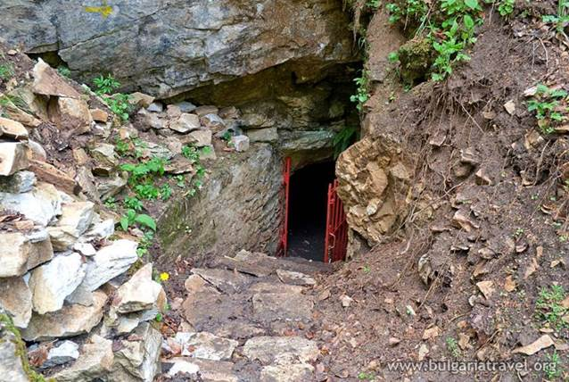
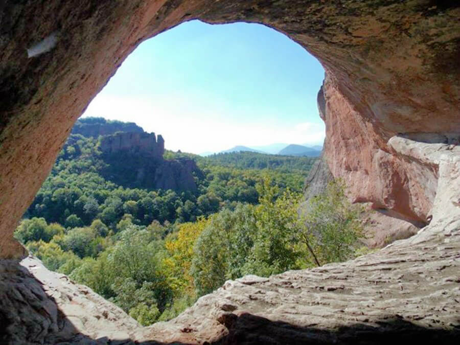
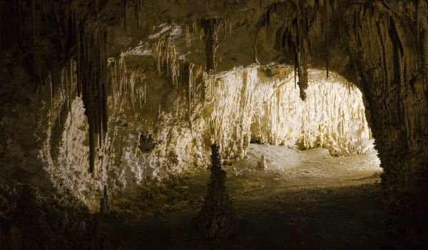
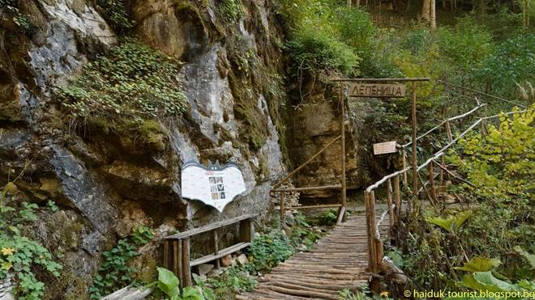

Пещерата Лепеница се намира в Западните Родопи, под връх Сюткя (2186м), на 10км
югозападно от град Ракитово и на 11км южно от Велинград. Дълга е 1525м и е разположена на 975м надморска височина, с денивелация 10м.
До пещерата има достъп и от Ракитово, и от Велинград.
|
 |
|  |
Лепеница има три етажа. Долният е с дължина 273м и през него тече подземна река. На втория етаж при
дъждовно време се образуват четири езера, а в сухо време езерата са само две. Третият етаж е сух, но недостъпен. Пещерата е богата на
сталагмити, сталактити и сталактони и е изключително красива. Тук са открити впечатляващи пещерни бисери, които днес могат да се видят
в Природонаучния музей в гр. София.
|
Пещерната фауна е изключително богата и интересна. Досега са известни 24 вида животни,
от които 6 са категоризирани като троглобионти (живещи единствено в пещери). В Лепеница живеят 6 вида прилепи. Температурата в
пещерата е около 10 градуса.
|
 |
|  |
В момента пещерата е туристически обект, след като повече от 50 години е била недостъпна за
туристи. В нея се влиза само с водач и специална екипировка, на групи, не по-големи от 10 души. Движението вътре се осъществява само
по строго определени маршрути. Забранено е пушенето и употребата на алкохол и упойващи вещества при посещение в пещерата, както и
пипането и чупенето на пещерните образувания.
|